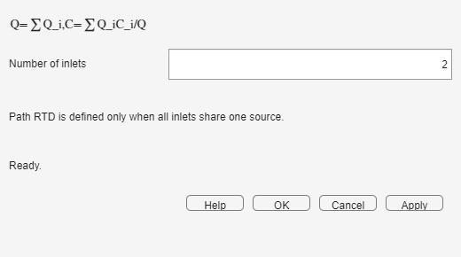

The mixer sums the inlet flows and forms flow-weighted concentration and RTD signals. A network RTD remains defined only when all inlets originate from the same tracer source.
Make sure every connected branch uses the same coordinator grid. To obtain one global network RTD, all branches must descend from the same Tracer Source.

The mixer uses Q-weighted averages: a high-flow branch contributes more to the outlet C(t) and E(t) than a low-flow branch.
Concentration can still be mixed when inlets come from different sources, but there is no single source-to-monitor RTD. The monitor therefore explains that the global RTD is undefined and disables Use as RTD in Tab 1.
| Symptom | What to do |
|---|---|
| An inlet port is unconnected | Connect every configured inlet or reduce the inlet count. |
| The transfer button is disabled | Trace the branches back to their sources; use one common source if a global RTD is required. |
| The parallel peak has an unexpected weight | Check branch fractions and remember that mixing is weighted by Q, not by branch count. |